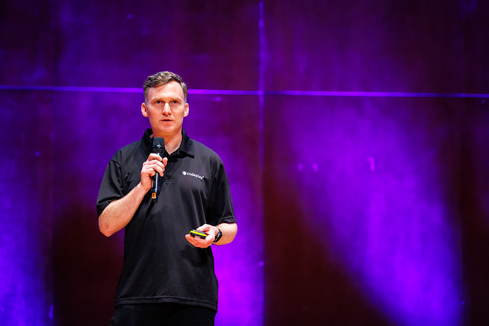

Rod Burns builds ecosystems for open standards and open source.
Established the UXL Foundation with experience in mobile · games · embedded · HPC · AI
A results-oriented leader who has planned and executed strategies to grow developer ecosystems around emerging technologies. Most recently, led the formation of the UXL Foundation, a Linux Foundation project building unified, vendor-neutral libraries for AI and HPC developers while staying hands-on by building the demos and projects that keep him close to the developer community.

From SYCL evangelist to foundation founder
Rod's career spans mobile, games development, embedded, HPC and AI — always at the point where a new technology needs a developer community to actually take hold. That pattern repeats: identify the technical gap, build the tools and content developers need, then formalize the community into lasting, open governance.
That arc reached its clearest expression in 2023, when Rod led the formation of the UXL Foundation, bringing eight major hardware and software vendors together under the Linux Foundation to build unified, vendor-neutral compute libraries for AI and HPC.
He stays technical by choice, building demos and side projects so his strategy is always grounded in what the developer actually experiences.
- Open governance & standards-body formation
- Developer ecosystem & community strategy
- SYCL, oneAPI & heterogeneous High Performance Computing
- Conference programming & technical storytelling
- Press & analyst relations for technical launches
- Hackathons, workshops & hands-on developer education
The changelog
A year-by-year record, tagged like a release log from organising a developer conference in 2015 to founding an eight-company standards foundation in 2023.
- Wrote a blog post on establishing open governance and what he learned founding the UXL Foundation.
- Organized and hosted the UXL Foundation Mini Summit at the Linux Foundation Open Source Summit.
- Mini Summit session recordings published on YouTube.
- Authored the UXL Foundation 2024 Annual Report, outlining the year's achievements.
- Filmed an interview at SC24 on the UXL Foundation.
- Presented on the UXL Foundation at ISC24, picked up by analyst Addison Snell.
- Signed a liaison agreement between the UXL Foundation and the Khronos Group — announced here and covered in the press.
- Wrote about the UXL Foundation's goals for the Parallel Universe online magazine.
- Hosted a hackathon for the Dirac UK HPC community and wrote about it.
- Led the creation of the UXL Foundation, bringing Arm, Broadcom, Fujitsu, Google, Imagination Technologies, Intel, Qualcomm and Samsung together — announcement here.
- Presented the announcement in the keynote at the Open Source Summit in Bilbao — keynote video and a follow-up Linux Foundation interview.
- Launch coverage ran in Forbes, TechCrunch, VentureBeat, SiliconAngle, Phoronix, Computer Weekly and 14+ other outlets — full list in the press strip below.
- Organized and hosted a hackathon at the IWOCL conference and wrote about it.
- Announced Codeplay's packaged binaries for using SYCL on Nvidia and AMD GPUs.
- Co-authored an article on migrating from CUDA to SYCL for Parallel Universe magazine.
- Wrote a personal blog on how he approaches planning and goal-setting for developer relations.
- Established a community forum for oneAPI, the precursor to the UXL Foundation.
- Hosted The SYCL Sessions on YouTube, bringing the SYCL community together to present their work.
- Presented on the potential for using the RISC-V Vector extension.
- Partnered with Lawrence Berkeley National Laboratory to deploy SYCL on the Perlmutter supercomputer.
- Wrote a personal blog on how gardening is a lot like developer relations.
- Hosted a set of online sessions to teach developers how to use SYCL.
- Released the team's SYCL learning materials as open source — SYCL Academy.
- Led the campaign launching ComputeCpp as the first SYCL-conformant implementation.
- Worked with developers at Friedrich-Alexander Universität on solving Maxwell's equations with SYCL.
- Demonstrated TensorFlow running on SYCL on AMD hardware.
- Organized the first Inmarsat Developer Conference, bringing together speakers from across the community.
Milestones worth pinning
The moments that mattered most — pulled out of the full log above.
Field notes
Add conference photos, speaking shots, and behind-the-scenes images here.